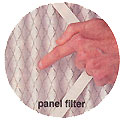
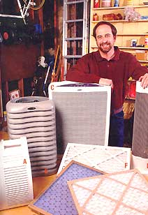
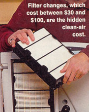
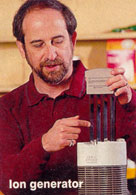

Are home filters a magic bullet in allergy relief, or an expensive sugar pill?
The dilemma is that indoor air pollution can be up to ten times greater than levels found outdoors. Such close proximity to dust mites, pet dander, mold, bacteria and mildew, along with outdoor allergens like grasses, weeds and pollen, can make your refuge nothing but a ruse.
There are three methods that help to control indoor pollution: source control, ventilation and air cleaning. Source control (removing the source of the allergens) is the most cost-effective; unfortunately, not all pollutants can be identified or eliminated. Pet dander, for instance, is one of the most prevalent sources of indoor pollution, but getting rid of Fido is more than most pet owners can bear. Ventilation (bringing outside air inside) helps, but most of us don't live in a climate where leaving the windows open year-round is an option. In addition, leaving the windows open allows outside allergens to enter the house. But cleaning the air with filters, even though it's more costly than the other two methods, is probably the best way to reduce the allergens in your house. Combine all three methods and you'll breathe easier.
There are three general types of filters: mechanical, ion generators and electronic air cleaners. In addition, there are "hybrid" systems that combine mechanical, ion and/or electronic features.
Mechanical filters are the models found in most homes with central heating and/or air conditioning. They are also found in portable fan-forced units and serve as register covers where an air duct enters a room. The standard mechanical filter is a flat filter that contains coarse fibers (typically fiberglass, aluminum or synthetic material) held in place with a cardboard or plastic frame. Other models use an "electret" media, which is a permanently charged plastic film or fiber. A third type is a panel filter, which has a pleated or an extended surface.
Generally, mechanical filters are efficient at collecting large particles, but remove a small percentage of smaller particles (the panel filter is somewhat more efficient at small-particle capture). With mechanical filters, the more dense the filter material or the greater the filter surface area, the better it will remove pollutants. Whole-house mechanical filters, at $1 to $15 each, are a bargain in the air-cleaner world, but they are also the least effective, stopping only 10% to 40% of pollutants. They also need to be replaced on a monthly or bimonthly basis.
Electronic air cleaners are the most efficient cleaners of indoor air, removing up to 95% of dirt, dust and smoke.
I on generators, which come as portable units only, use electrostatic charges to remove particles from indoor air. The charged particles in a room are then attracted to walls, floors, tabletops, draperies and occupants, which often results in a noticeable accumulation of soot. In some cases, these devices contain a collector to attract the charged particles back to the unit. They may also have a fan and mechanical filter. Ion generators take second place in the price hierarchy, at $50 to $150 apiece, but you usually need a unit for each room. Also most systems require either filter replacement or periodic cleaning. They can remove 25% to 94% of the pollutants.
Electronic air cleaners use an electrical field like a powerful magnet to trap charged particles. Whole-house air cleaners are most often installed in house ducts between the cold air return and the fan, but they can also be in portable units with fans. Electronic air cleaners are usually either electrostatic precipitators or charged-media filters. Electrostatic precipitators collect particles on a series of flat plates, or cells, enclosed in a metal frame. There are nonelectronic electrostatic precipitator filters, but these are not as effective. Charged-media filters, on the other hand, collect the particles on the fibers in a filter.
Electronic air cleaners are the most efficient cleaners of indoor air, removing up to 95% of dirt, dust and smoke. They are also the most expensive, ranging in cost from $150 to $600, with some units costing upwards of $1,000. One big advantage to electronic air cleaners is that they can be reused almost indefinitely, needing only to be washed in the dishwasher or tub.
Finally, hybrid filters - those that combine all three types of cleaners - may be whole-house or portable, and can combine different methods such as mechanical filters and passive electrostatic filters. These can range in price from $50 to $200 and often require expensive filter replacements on a periodic basis. Their effectiveness varies depending on the combination of filters.
No air cleaning system can remove all pollutants from indoor air. In addition, there are no uniform standards for comparing systems, although most filters are tested and given an ASHRAE (American Society of Heating, Refrigeration and Air-Conditioning Engineers) rating (see " Do They Work? " ). Portable filters are sometimes given a Clean Air Delivery Rate (CADR) by the Association of Home Appliance Manufacturers (ARAM). This refers to the rate at which air is moved through the filter, measured in cubic feet per minute. In both ratings, the higher the number, the better.
Under the right conditions, the better filters can effectively remove many household pollutants. In addition, air cleaners may also contain absorbents (charcoal) and/or reactive materials to remove cigarette smoke and odors. Ozone generators designed to eliminate odors and kill bacteria are becoming increasingly popular, but, curiously, ozone in sufficient quantities is itself a pollutant and can cause shortness of breath and chest pain if allowed to accumulate. It is also important to understand that air cleaners cannot remove pollutants such as dust, dander and pollen once they settle. Another important consideration is that whole-house air cleaners usually only work when the heater/air conditioner is on; therefore, you may not have air cleaning when the temperature is mild.
All filter materials come in either a portable or whole house system - if you don't have a forced-air heating system, you are limited to the portable kind. Portables are generally cheaper than whole-house units, costing $80 to $500 depending on the size of the room you're filtering. They can be focused in high-risk areas such as the bedroom or living room. Look for units that have a "high-efficiency particulate air (HEPA) filter" or an "ultra-low penetration air (ULPA) filter." These filters work well for removing dust and smoke. Brand names, which include Honeywell, Panasonic, Holmes, Hunter and Kenmore, are available from a large variety of retail stores.
Whole-house air cleaners, on the other hand, filter all of the air in your house (as long as the windows are closed) and they can vary in price from as little as $1 to as much as a $1,000 with installation. A good, pleated electrostatic filter that replaces the ordinary fiberglass filters standard in most central heating units can provide reasonably good filtration for a very small price, about $10 to $15 (these filters must be changed periodically). It's important to note that washable electrostatic filters may not work as well as replaceable ones. For the most effective cleaning of indoor pollutants, however, you will probably need to spend at least $400 for an electronic precipitator unit. Brand names include Honeywell, Research Products, 3M, Purolator, Precisionaire and American Air Filter. While consumers can easily install small filters, larger units generally require a heating contractor, which may add significantly to the cost.
Some so-called "personal" or "micro" air cleaners... may promise "sparkling clean air" or even an "increase in your energy level." These claims are unproven and probably false.
Since the business is not well-regulated, you will run into a lot of hype, including questionable products and claims. Some so-called "personal" or "micro" air cleaners (small individual cleaners that you wear or put on your desk), may promise "sparkling clean air" or even an "increase in your energy level" in exchange for $50 to $200. Don't bet on it. Simply put, machines with a tiny CADR will have a tinier effect on the air you breathe.
That said, not even the massive units can provide complete protection from airborne pollutants. Nevertheless, electronic air cleaners, although initially expensive, are probably the best bet over the long run. If you have allergies during the spring or fall, you may want to supplement a whole-house air cleaner with a portable in your bedroom, since your heater or air conditioner will not be running enough during these times. The bottom line? In concert with source control and ventilation, air cleaners can be an effective weapon in the fight against allergies.
Related info:
A Fair Exchange
10 Tips to Attack The Source
Do They Work?
|
 |
|
 |
|
 |
 |
|